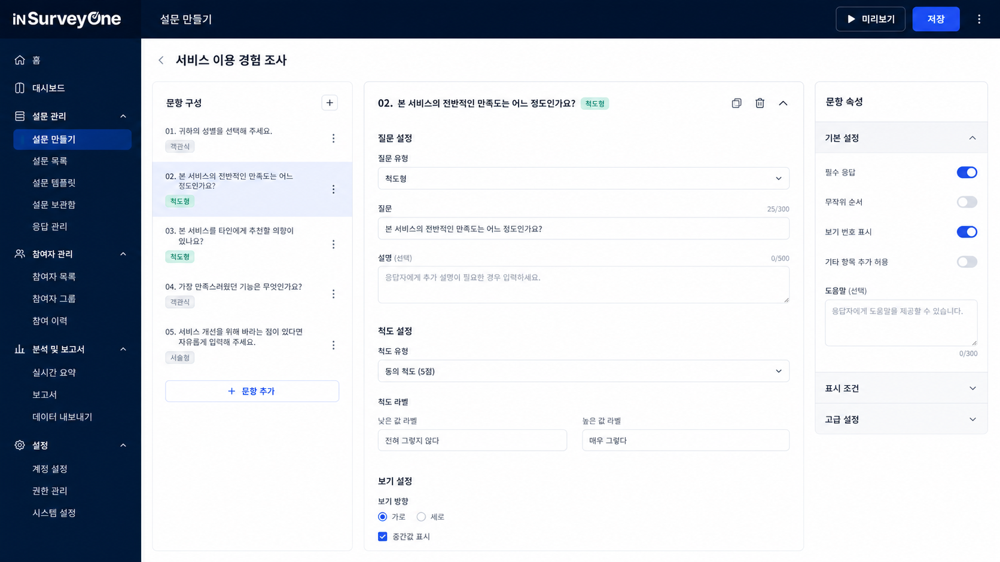
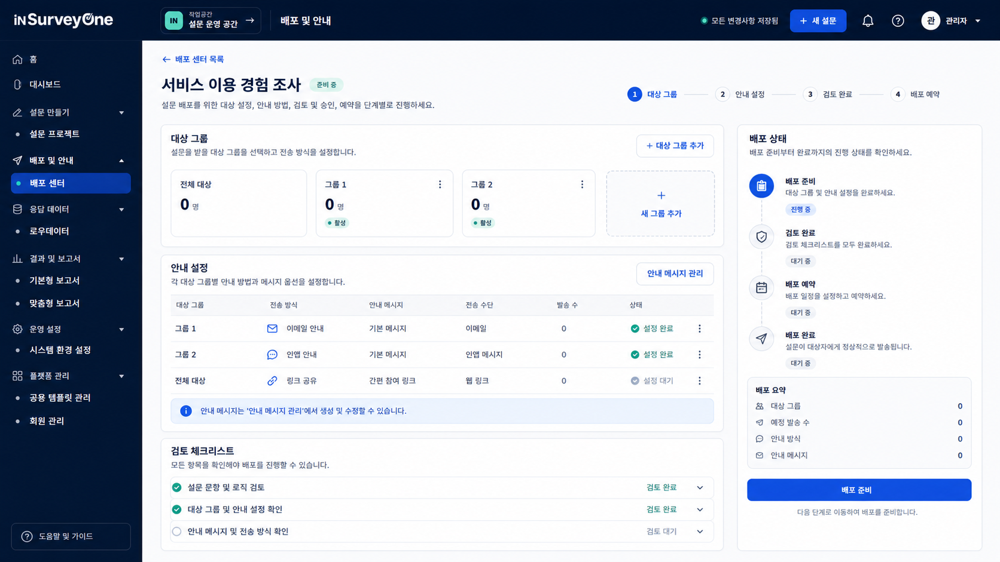
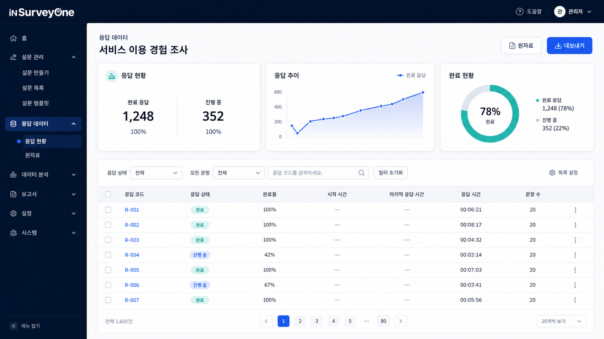
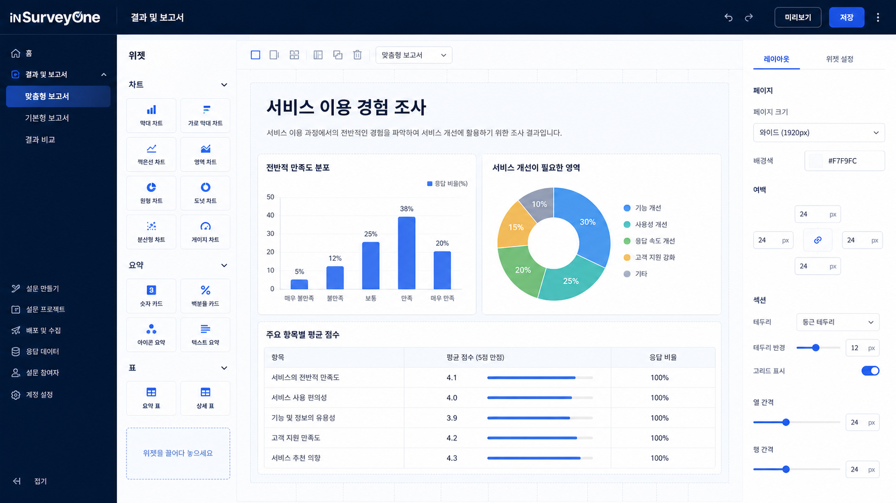

설문 설계
새 설문을 만들거나 공용 템플릿을 기준으로 문항과 보기를 구성하고 설문 화면을 점검합니다.
- 설문 프로젝트 관리
- 문항·보기 구성
- 공용 템플릿 활용
SURVEY OPERATIONS PLATFORM
인서베이원은 설문 문항을 구성하고 배포를 준비한 뒤, 응답 데이터와 결과 보고서를 같은 작업 공간에서 이어서 관리하는 설문 운영 플랫폼입니다.
제공 가능한 배포 채널과 외부 시스템 연계 범위는 도입 환경과 운영 조건에 따라 달라집니다.
SIX-STEP OPERATIONS
문항 작성만으로 끝내지 않고 프로젝트 설정, 검토, 응답 데이터와 보고 결과가 이어지도록 운영 단위를 구성합니다.
조사 목적과 대상, 운영 기간과 담당 범위를 정리해 설문 프로젝트의 기준을 세웁니다.
문항과 보기, 응답 방식을 구성하고 참여자가 만나게 될 설문 화면을 확인합니다.
설문 내용과 안내 정보를 점검하고 운영 환경에 맞는 배포 방법을 준비합니다.
진행 중인 설문의 상태와 응답 현황을 확인하며 필요한 운영 조치를 이어갑니다.
수집된 응답을 원자료 단위로 확인하고 분석·후속 활용에 필요한 형태를 준비합니다.
조사 결과를 기본형 또는 목적에 맞춘 보고 구조로 정리해 관계자에게 전달합니다.
PUBLIC PRODUCT VIEW
공개 데모 화면은 설문 프로젝트, 최근 응답 현황과 빠른 시작 항목을 함께 보여주는 제품 대시보드의 구성 예시입니다.

실제 제품의 화면 구조와 업무 흐름을 기준으로 개인정보와 운영 식별자를 제거해 재구성한 공개 데모입니다. 화면별로 어떤 작업이 이어지는지 한눈에 비교할 수 있습니다.

문항 유형과 보기, 척도와 표시 조건을 한 작업 화면에서 구성하고 미리보기 전 상태를 점검합니다.

대상 그룹과 안내 방법을 정리하고 검토 항목과 배포 상태를 단계별로 확인합니다.

완료와 진행 상태, 응답 추이를 확인하고 비식별 응답 코드를 기준으로 원자료를 검토합니다.

차트와 요약, 표 위젯을 배치해 조사 목적과 전달 대상에 맞는 결과 화면을 구성합니다.
OPERATING CAPABILITIES
설문 운영자가 작업 순서에 따라 필요한 화면을 찾고, 다음 단계로 이어갈 수 있도록 기능을 네 가지 업무 영역으로 구분합니다.
새 설문을 만들거나 공용 템플릿을 기준으로 문항과 보기를 구성하고 설문 화면을 점검합니다.
참여자에게 전달할 설문과 안내 내용을 준비하고 진행 상태를 운영 기준에 맞춰 관리합니다.
설문별 응답 현황을 확인하고 수집된 원자료를 후속 검토와 분석에 활용할 수 있도록 관리합니다.
응답 결과를 확인하고 조사 목적과 전달 대상에 맞는 기본형·맞춤형 보고 구성을 준비합니다.
실제 배포 채널, 외부 시스템 연계와 제공 기능은 계약·구축 범위 및 운영 환경에 따라 달라질 수 있습니다.
RESPONSIBLE SURVEY OPERATIONS
설문 목적, 수집 항목과 결과 활용 범위를 먼저 정하고 응답자 안내와 담당자 책임을 실제 운영 절차에 반영해야 합니다.
조사 목적에 필요한 질문과 대상, 수집 기간을 정하고 불필요한 항목을 줄입니다.
참여자가 설문 목적과 응답 정보의 활용 범위를 이해할 수 있도록 안내 기준을 준비합니다.
설문 작성, 응답 확인과 결과 공유에 필요한 역할과 공개 범위를 운영 환경에 맞춰 정합니다.
표본, 문항 구조와 조사 맥락을 함께 살펴 결과가 과도하게 해석되지 않도록 담당자가 검토합니다.
인서베이원은 설문 운영과 결과 정리를 지원하는 업무 도구입니다. 표본 설계, 문항의 적절성, 결과 해석과 활용 결정은 조사 목적과 적용 맥락을 아는 담당자의 검토가 필요합니다.
개인정보 처리, 보관 기간, 접근 권한과 외부 연계 기준은 적용 조직의 정책과 관련 법규에 맞춰 별도로 설계해야 합니다.
PRODUCT CONVERSATION
조사 목적, 예상 응답 대상과 문항 구성, 필요한 배포 방법과 결과물 형태를 알려주시면 인서베이원의 적용 범위를 함께 검토하겠습니다.
인서베이원 도입 상담